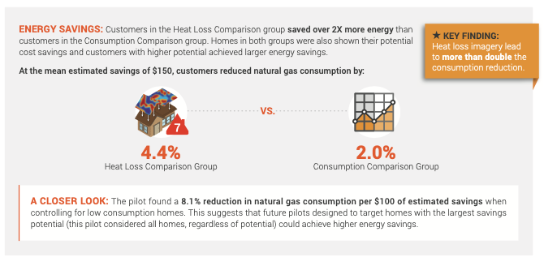
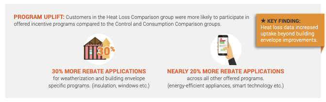

Tools Used
Initiated By
- City of Medicine Hat
Partners
- MyHEAT
Results
- The heat loss imaging plus norms treatment was twice as effective as the traditional energy report treatment
Landmark Case Study
Heat Loss Images, Norm Appeals Raise Impacts in Medicine Hat
A Randomized Controlled Trial tested the impacts of providing consumers, on their monthly utility bills, with high-resolution infrared images of their houses, information about their heat loss relative to their neighbors, and estimated savings from improving their home’s insulation and air tightness. This treatment was twice as effective as a traditional Home Energy Report (HER) treatment. This demonstrates the power of visual cues that help make the intangible more vivid, concrete, and actionable. This case study also illustrates how norm appeals can backfire when descriptive norms are provided to those who are already doing “better” than most, without also providing an affirming injunctive norm. Designated a Landmark case study in 2020.
Background
Infrared has been used before as part of home energy visits, to help increase participant response. However, this appears to be the first time it has been coupled with automated on-bill HERS reporting.
Medicine Hat is a politically conservative city of about 63,000 people in western Canada, with relatively hot summers and cold winters and a municipally owned utility. Prior to this experiment, residents had not been provided with behavioral feedback on their utility bills.
Getting Informed
A literature review revealed the following.
- Thermal images may make representations of energy loss more vivid, thus drawing viewers in, holding their attention, and exciting their imagination, in a way that tabular information fails to do.
- They may also be more easily remembered during decision making and can make abstract ideas (such as energy loss and energy conservation) more concrete and actionable.
- While measuring heat loss through the roof does not provide a full picture of the air leaks and heat loss in a house, it does provide a reasonable proxy. This is partly because so much heat loss typically happens through the roof. It is also because, due to thermal bridging from the walls to the rooftop, rooftop temperatures are affected by and are therefore indicative of overall building heat loss.
- It was going to be a challenge to motivate residents to reduce their energy use. Medicine Hat is a key hub of Canada’s natural gas industry. It was one of the most conservative regions in Canada and had one of the lowest shares of environmentalists; both factors generally indicate a reduced uptake of energy conservation programs. Further, the City was a “later adopting region,” and such regions tend to have less favorable conditions for their success, and smaller impacts than earlier-adopting regions.
Delivering the Program
14,000 single-detached households were randomly selected to participate in this study and were then randomly divided into three groups of equal sizes - two treatment groups and one control group.
1. ‘Traditional’ Home Energy Report (HER) Treatment Group. This group received monthly on-bill messaging, which included the following components (Building Motivation, Engagement and Habits Over Time).
- A month-to-month consumption comparison between a given household, the 50 most similar households, and the top quintile (most efficient) of those 50 households (Descriptive Norm Appeal; Personalized, Credible, Empowering Communication)
- Potential bill savings if energy use were reduced to the mean use for these similar households. Households using more energy than the mean saw this number framed as a potential saving, whereas households using less energy saw their numbers framed as savings achieved. Note that both options were framed to indicate that it is a good thing to reduce energy use. (Financial Incentives; Descriptive and Injunctive Norm Appeals)
- Graphical information on natural gas and electricity consumption over the past year for the household compared to the similar households (Descriptive Norm Appeal)
- A list of potential options for reducing energy consumption (Personalized, Credible, Empowering Communication)
The following is an example of the information they received.

2. Heat Loss Imaging and Norms Group. This group received monthly on-bill messaging, which included the following components (Building Motivation, Engagement and Habits Over Time).
- An infrared image of their home’s roof, taken at night during the heating season, acquired using an aircraft-mounted thermal infrared sensor. Households were not asked to agree to this ahead of time, but those few who had concerns were satisfied once they knew that the images and information for any given home were only made available to the people living at that home. Generally, there was more concern about the City ‘wasting’ money on airplanes and colour pictures. (Vivid, Personalized, Credible Communication)
- A heat loss (MyHEAT) score ranging from 1 to 10, along with the average heat loss score for houses in their neighborhood and for the entire City. Note that those households that learned that they were relatively energy efficient did not receive an accompanying injunctive norm to reinforce their positive behavior. (Descriptive Norm Appeal)
- Highlighted information on potential bill savings from reducing heat loss to the best possible category. Note that the more energy-efficient the household, the lower this incentive became. (Financial Incentives)
The following is an example of the information this group received.
.png) In addition, both treatment groups were given the same set of four tips to reduce their consumption, as shown below. This on-bill messaging ran for three consecutive months from February through April 2018 and then again in November 2018.
In addition, both treatment groups were given the same set of four tips to reduce their consumption, as shown below. This on-bill messaging ran for three consecutive months from February through April 2018 and then again in November 2018.

3. Control Group. This group did not receive any tips or behavioral feedback on their utility bills.
Opt-Out Rollout
The program was offered on an opt-out basis, with homes being removed from the MyHEAT platform and project within 1-5 business days upon a request being made. Due to the nature of the RCT, the project team did not want the customer base to be aware that the treatment was occurring, however there was an initial media release mentioning the project and the involvement of MyHEAT’s technology.
City staff fielded questions from a few residents about privacy concerns, but these were easily resolved once the residents understood that their home’s image was not publicly available.
Word-of-Mouth Promotion
The City received many calls from customers who did not receive heat loss details and who wanted to access information about their homes. Since there was no public advertising, this suggests that there was significant word-of-mouth promotion for the project and a lot of interest from customers outside of the treatment groups. (Word of Mouth)
The following table lists the key barriers to action and how they were addressed. (Overcoming Specific Barriers)
|
Barrier |
Strategy |
|
Energy conservation is generally of low importance to the priority audience. Competing communications Lack of information on household air leaks and insulation |
Thermal images were used to make representations of energy loss more vivid, thus drawing viewers in, holding their attention, and exciting their imagination in a way that tabular information fails to do. Norm appeal: comparison with neighbors |
|
Energy conservation is abstract. |
Thermal images were used to make abstract ideas (energy loss) more concrete and actionable, and to increase recall during decision making. |
Measuring Achievements
An academic third-party team (Dr. Maya Papineau from Carleton and Dr. Nicholas Rivers from Ottawa University) was retained for the evaluation.
14,000 single-detached households were randomly selected to participate in the study and were then randomly divided into three groups of equal sizes - two treatment groups and one control group. Subjects did not know they were part of an experiment, which eliminates Hawthorne effects.
Measures
- Utility bills - monthly consumption and expenditure data starting in 2015
- Household meters - Medicine Hat uses digital (smart) electricity meters that record electricity and natural gas consumption at both daily and hourly intervals. The main analysis is based on this daily natural gas and electricity consumption data, from January 2017 to March 2019 (one year prior to and after treatment.)
- Post-intervention participation in energy-efficiency programs
Feedback
Individual Feedback was provided directly to consumers in the two treatment groups, on their monthly utility bills.
- On each bill, the first intervention group received the traditional HER approach using a graphical overview of natural gas and electricity consumption over the past year for the household compared to similar households. In addition, these households were told their savings achieved / potential bill savings, relative to the mean use for these similar households.
- On each bill, the second intervention group received visual and numerical feedback on their home’s winter heat loss using infrared images and MyHEAT scores, along with the average heat loss score for houses in their neighborhood and for the entire City. In addition, these households were told their potential bill savings from reducing heat loss to the best possible category.
Results
The heat loss imaging plus norms treatment was twice as effective as the traditional HER treatment. At the mean potential estimated saving of $150 per year per household, natural gas use was reduced by an average of 4.4% in the group shown heat loss imagery and comparisons, and only 2.0% in the group shown only the consumption comparison graph.

Households that received the heat loss treatment were subsequently also more likely to take advantage of energy efficiency programs than the other two groups.
In addition, local weatherization rebate programs saw nearly 30% higher participation from those seeing their heat loss details. Participation in energy conservation rebate programs unrelated to weatherization increased by 19%.

On initial analysis overall program impacts appeared relatively small. However further analysis revealed a “backfire” (rebound) effect. Low efficiency / high use households decreased their natural gas and electricity use by over 5% on average, while high efficiency / low consumption households increased theirs by 3% on average.
The next few paragraphs focus specifically on the low efficiency /high use households because (1) programs can be specifically targeted at them, (2) they represent a substantial number of homes, and (3) steps can be taken to reduce the ‘backfire’ or ‘rebound’ effect on the high efficiency/low use households in future.
In total, the high use households in treatment two alone decreased their total annual energy use by roughly 3,393,000 kWh.
There were 895 high use customers in treatment two, and their average pre-treatment consumption levels were 0.626 mcf per day of natural gas and 24.26 kWh per day of electricity. Average daily household total energy use (gas plus electricity) before treatment was therefore 183.46 + 24.26 = 207.72 kWh. Annual use across all customers in this segment was 207.72 x 365 x 895 = 67,856,931 kWh. The 5% savings was 3,392,847 kWh.
Additional savings were achieved for the high use customers in treatment one.
Contacts
Mike Dykstra
City of Medicine Hat
MIKDYK@medicinehat.ca
MyHEAT
hello@myheat.ca
Notes
- Visual cues can help make the intangible more vivid, concrete, and actionable. In particular, the impact of imagery that strikes a chord with the viewer (“look at our house”) can be powerful.
- Norm appeals can backfire (boomerang) when descriptive norms are provided to those who are already doing “better” than most, without also providing an affirming injunctive norm. This approach tends to drive consumers towards “the magic middle”, because people tend to measure the appropriateness of their behavior by how far they deviate from the norm. Those who were doing significantly “worse” than others are influenced to do better, but those who were doing better than others are influenced to relax a bit and do worse than they had been doing.
Steps can be taken to reduce this ‘backfire’ or ‘boomerang’ effect. For example, when the utility in Sacramento USA first put feedback graphs on its bills, it encountered a similar effect. They fixed it by putting a smiley face on the bills that were below average. This sent an Injunctive Social Norm-- "Your Society is happy you are using less electricity. Please continue your behavior".
According to Deviance Regulation Theory (Blanton & Christie, 2003) a message to change behavior should focus on deviators from the norm, painted in a positive or negative light depending on whether that deviance is good or bad. (Injunctive Norm). - According to Mike Dykstra at the City of Medicine Hat, “For many people, the information seemed to exist in a bit of a vacuum. Customers weren’t quite sure how to interpret the images. … I think the corporate ‘we’ could have done more with leveraging the images as a springboard to talking about the causes and remediation of heat loss.”
Landmark Designation
The program described in this case study was designated in 2020.
Designation as a Landmark (best practice) case study through our peer selection process recognizes programs and social marketing approaches considered to be among the most successful in the world. They are nominated both by our peer-selection panels and by Tools of Change staff and are then scored by the selection panels based on impact, innovation, replicability and adaptability.
The panel that designated this program consisted of:
- Arien Korteland, BC Hydro
- Kathy Kuntz, Kanndo Consulting
- Doug McKenzie-Mohr, McKenzie-Mohr Associates
- Sea Rotmann, Sustainable Energy Advice Ltd.
- Brian Smith and Lester Sapitula, Pacific Gas and Electric Company
- Reuven Sussman, American Council for an Energy-Efficient Economy
- Marsha Walton, New York Energy Research and Development Authority
This case study was written in 2020 by Jay Kassirer, based on information provided by the academic third-party evaluation team, MyHEAT and the City of Medicine Hat.